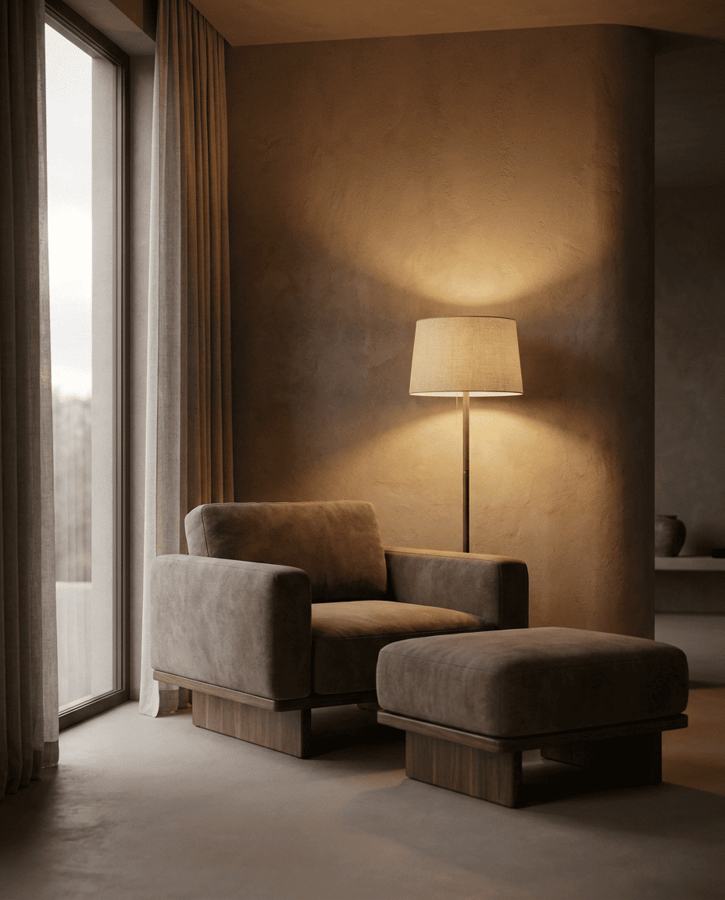
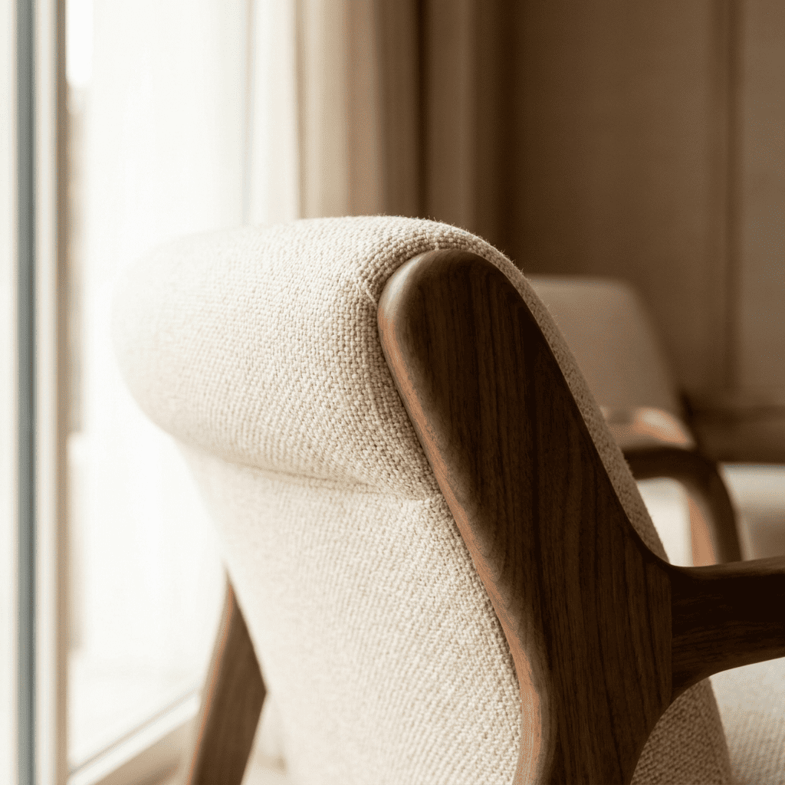
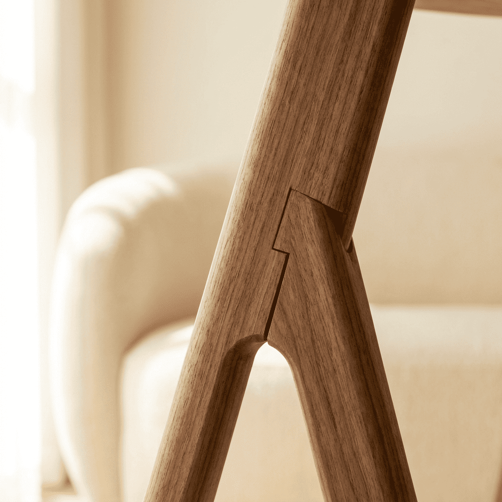
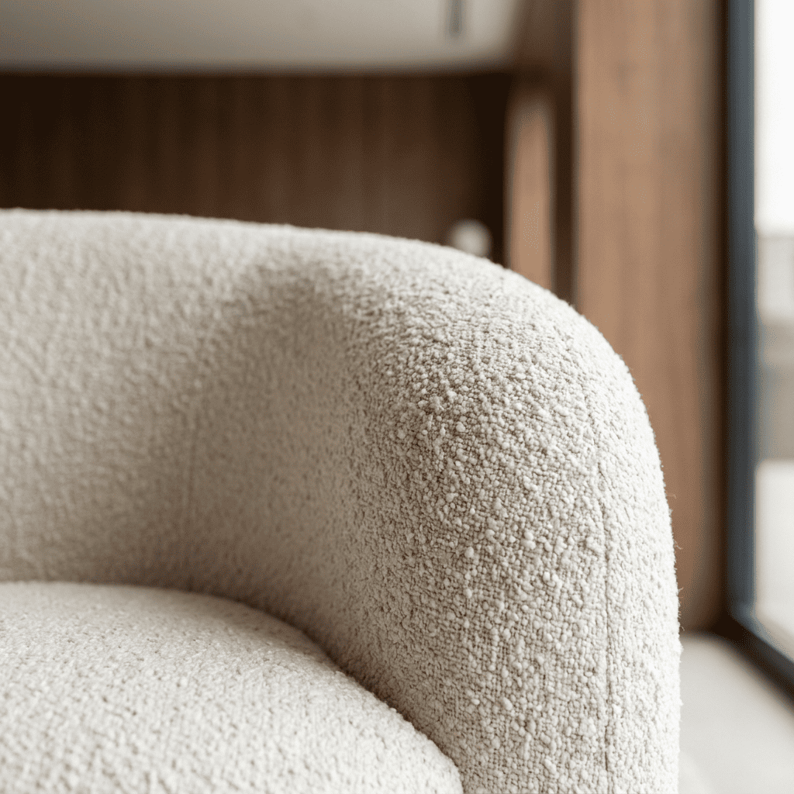
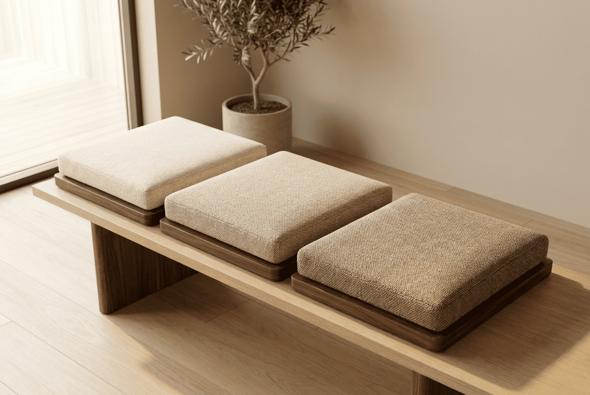

“좋은 의자는 앉는 순간
숨이 깊어진다.”
— Repose 장인
Our Beginning
가구 공방에서 20년을 일한 장인은 늘 같은 질문을 했습니다. “앉는 순간 숨이 깊어지는 의자는 어떻게 만들까?”
Repose는 그 질문의 답을 찾는 일에서 시작했습니다.
유행보다 앉았을 때의 편안함을, 빠른 소비보다 오래 가는 품격을 선택했습니다.

Our Values

몸의 곡선을 따라 감싸는 앉음새를 만듭니다.

모든 이음새와 마감을 사람의 손으로 확인합니다.

오래 써도 처음의 품격을 지키도록 수선까지 책임집니다.
The Craftsman
결을 읽는 일부터 시작합니다.
같은 나무는 하나도 없기에, 의자마다 가장 고운 면을 앉는 자리에 둡니다.
The Process
01
결이 고운 원목만 고릅니다.
02
나무가 안정될 때까지 천천히 말립니다.
03
프레임을 짜고 여러 겹의 쿠션을 손으로 채웁니다.
04
직물을 입히고 모든 이음새를 직접 확인합니다.

Materials
Our Journey
20년 전
장인이 작은 가구 공방을 시작합니다.
몇 해 전
앉는 순간의 편안함을 연구하며 Repose를 준비합니다.
오늘
쇼룸에서 직접 앉아 보며 고르는 의자를 선보입니다.
Our Promise
흔들리는 다리와 이음새를 고칩니다.
닳은 쿠션과 패드를 교체합니다.
직물을 새로 입혀 드립니다.